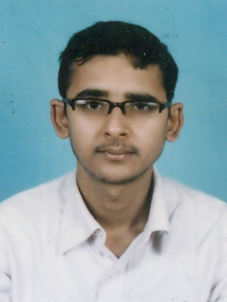

|

|
Academic Qualifications
- Research Scholar in Dept. of Computer Science and Engineering, Indian Institute of Technology, Guwahati (July 2014 - Present>
- Master of Technology in Dept. of Computer Science and Engineering with CGPA: 8.81/10 from Indian Institute of Technology, Guwahati (June 2012 - July 2014)
- Bachelor of Technology in Computer Science and Engineering with CGPA: 8.04/10 from B.P Poddar Institute of Management and Technology, WestBengal University of Technology (July 2006 - June 2010)
- Higher Secondary (10+2) with 77.5% from Beldanga C.R.G.S High School, under West Bengal Council of Higher Secondary Examination (May, 2006)
- Madhyamik (10) with 81.5% from Sargachhi Ramakarishna Mission High School, under West Bengal Board of Secondary Education (April, 2003)
Teaching Assistance
- Teaching Assistant in IIT, Guwahati For Data Communication (CS343) (July 2016 - November 2016)
- Teaching Assistant in IIT, Guwahati For Systems Lab (CS558) (January 2016 - May 2016)
- Teaching Assistant in IIT, Guwahati For Wireless Networks (CS551) (July 2015 - November 2015)
- Teaching Assistant in IIT, Guwahati For Systems Lab (CS558) (January 2015 - May 2015)
- Teaching Assistant in IIT, Guwahati For Programming Lab (CS513) (July 2014 - December 2014)
- Teaching Assistant in IIT, Guwahati For Systems Lab (CS558) (January 2014 - May 2014)
- Teaching Assistant in IIT, Guwahati For Programming Lab (CS513) (July 2013 - December 2013)
- Teaching Assistant in IIT, Guwahati For Computing Laboratory (CS110) (January 2013 - May 2013)
- Teaching Assistant in IIT, Guwahati For Discrete Mathematics (CS202) (July 2012 - December 2012)
Voluntary Services
- Conference Reviewer: IEEE ANTS 2015,IEEE ANTS 2014.
- Conference Reviewer: IEEE ICC 2017.
- Conference Reviewer: NCC 2017.
Professional Experience
- Programmer Analyst Trainee in Cognizant Technology Solution India pvt. Ltd. (July 2010 - July 2011)
|